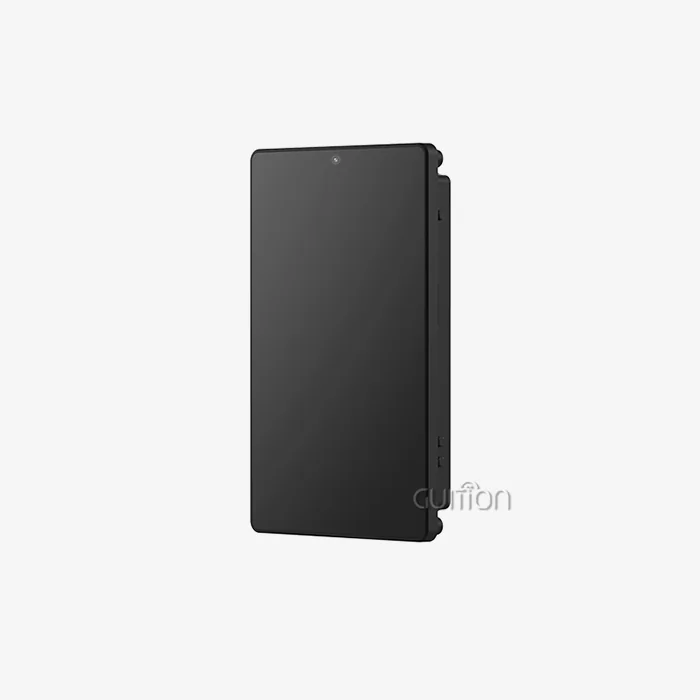

JC4880P443C_I_W_Y
Guition · ESP32P4 module screen
JC4880P443C_I_W_Y is a 4.3" 480x800 IPS Capacitive touch ESP32 display board by Guition based on the ESP32-P4 with 16MB flash, 32MB PSRAM.
Features, ports & interfaces
- MIPI-DSI display
- Capacitive touch
- 32 MB PSRAM
- 16 MB flash
- microSD (TF) card slot
- Wi-Fi 6 (802.11ax, 2.4 GHz) via ESP32-C6 co-processor – version from the ESP32-C6 datasheet
- Bluetooth 5.3 (LE) via ESP32-C6 co-processor – version from the ESP32-C6 datasheet
- Thread (802.15.4) – IEEE 802.15.4 radio of the ESP32-C6 co-processor – SoC capability per the Espressif datasheet; needs firmware support
- Zigbee (802.15.4) – IEEE 802.15.4 radio of the ESP32-C6 co-processor – SoC capability per the Espressif datasheet; needs firmware support
- Matter-capable radio (Wi-Fi / Thread) – ESP32-C6 co-processor capability per the Espressif datasheet; firmware-dependent
- RS-485 (MAX485 on UART1, RS-485 build)
- GPIO / IO port expansion
- Speaker interface
- Lithium battery interface
- BOOT button
- Enclosure / shell
Specifications
| Parameter | Value | Source |
|---|---|---|
| Screen size | 4.3" | source |
| Resolution | 480x800 | source |
| Panel | IPS | source |
| Shape | Rectangular | |
| Display interface | MIPI-DSI | source |
| Display driver | ST7701S | source |
| Touch | Capacitive | source |
| MCU / SoC | ESP32-P4NRW32 | source |
| MCU family | ESP32-P4 | |
| Co-processor | ESP32-C6 | |
| CPU frequency | 400MHz | source |
| Flash | 16MB | source |
| PSRAM | 32MB | source |
| SRAM | 768KB_HP 16KB_LP | source |
| Wi-Fi | Yes (via ESP32-C6) | source |
| Bluetooth | Yes (via ESP32-C6) | source |
| Category | ESP32-P4 Display Module | |
| Active area | 93.60 × 56.16 mm | source |
| Colors | 24-bit RGB (16.7M colors) | source |
| Connectivity | WiFi, Bluetooth | source |
| Dimensions | 117.01 × 69.41 mm | source |
| Expansion / IO | TF card slot, IO ports | source |
| Interface detail | TF card slot, IO ports, lithium battery interface | |
| Memory | 768 KB HP L2MEM, 32 KB LP SRAM | source |
| Operating temp. | -20°C to 70°C | source |
| Power consumption | Approximately 320mA | source |
| ROM | 128KB | source |
| Case / shell | Yes | source |
| Speaker interface | Yes | source |
| Storage temp. | -30°C to 80°C | source |
| Vendor | Guition | |
| Viewing angle | IPS Full View | source |
| Operating voltage | 5V DC | source |
Official links & documentation
- guition.com product page
- guition.com product page
- guition.com model list
- guitionofficial/P4-series (official GitHub)
- ultramcu/guition-jc4880p443c-i-w
- ultramcu/guition-jc4880p4-bsp
- MaxGramser/homeassistant_espscreen – docs/JC4880P443.md
- bigbag/JC4880P443C-examples
- ZyoungInc/JC4880P443C_BSP
- GalusPeres/HomeTiles
- MaxGramser/homeassistant_espscreen (Tessera)
Files
Offline copies are available on the interactive page.
Notes
- ESP32-P4 silicon before rev 3 and rev 3 are not binary compatible; a 10150002-V3 board revision with rev3 silicon exists. ESP32-C6 ships with old ESP-Hosted slave firmware (2.3.0) – upgrade to 2.12.x for stable Wi-Fi.
- guition.com links the same development archive (JC4880P443C_I_W.zip) for the _Y (cased) version.